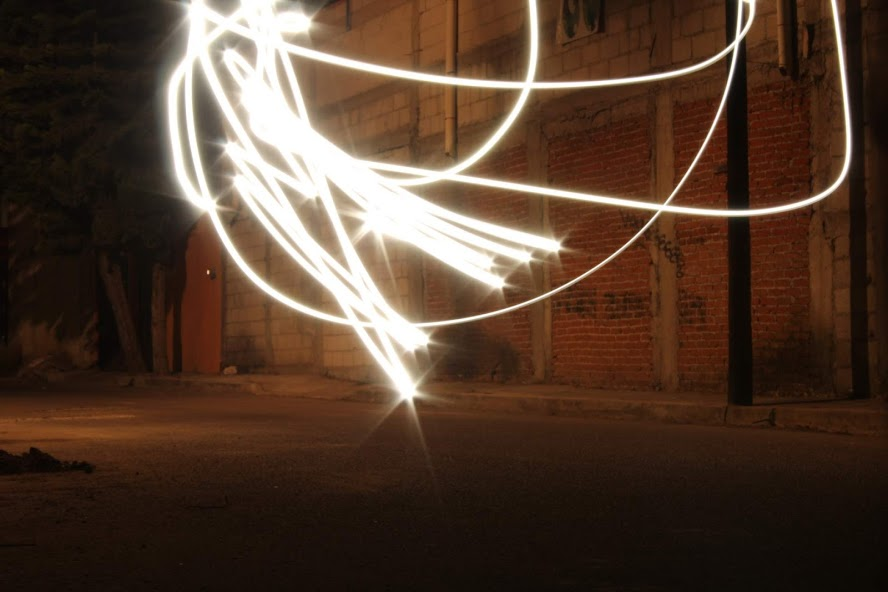
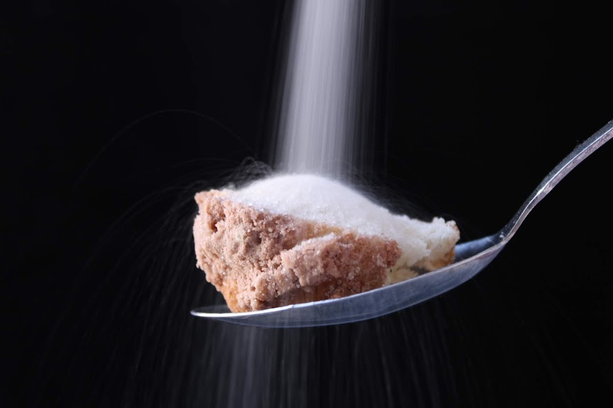
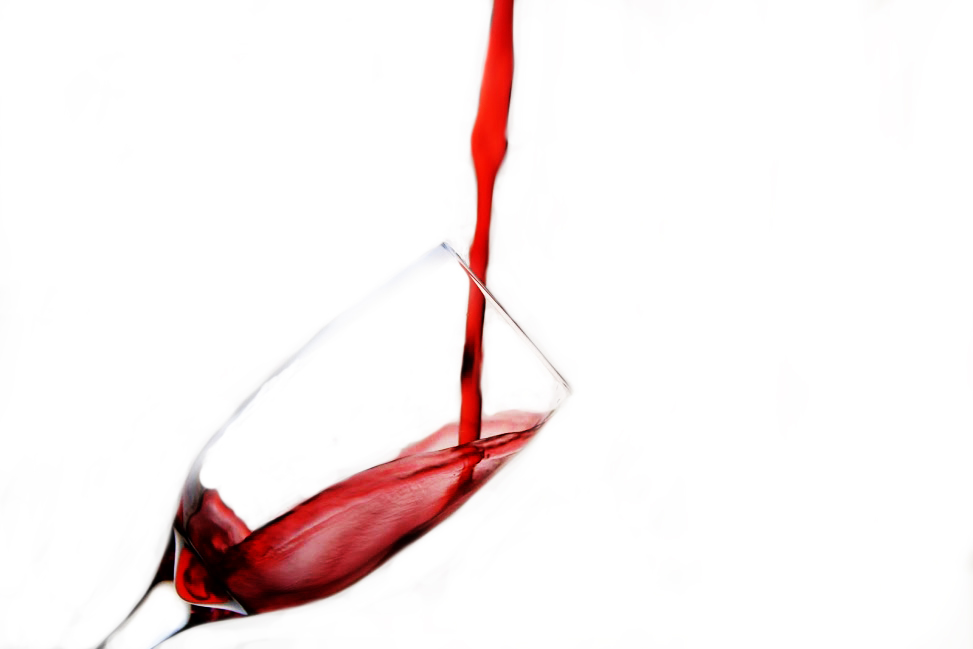

Fotografía
Fotografía¡Checa mi trabajo en la fotografía!
Acontinuación de muestro un poco de las fotografías que he tomado con diferentes clasificaciones.
Luz natural
 La luz natural se conoce principalmente como la luz que proviene del sol o de algún organismo que produzca luz propi. Es por eso que estas fotografías afrontan un problema que es buscar la luz adecuada dentro de cierta hora del día, aquí algunos ejemplos.
La luz natural se conoce principalmente como la luz que proviene del sol o de algún organismo que produzca luz propi. Es por eso que estas fotografías afrontan un problema que es buscar la luz adecuada dentro de cierta hora del día, aquí algunos ejemplos.
- Flores rojas. Esta es una fotografía que está tomanda con un desenfoque de segundo plan, se nota el primer y tercer plano desenfocado y sobresalen las flores que están en medio.
- Pinos. En esta fotografía se todo está enfocado, desde los pinos hasa el cielo porque lo importante era ver la simplicidad y aquí hay una muestra de repetición de
objetos.
- Edificio. Esta fotografía tiene todo enfocado y se quiso mostrar la esquina del este edificio que nos mostrara todos los detalles.
Luz artificial
Podemos decir que es la luz producida por un flash o una lámpara que se suma a la iluminación de una escena. Término genérico para cualquier tipo de fuente de luz artificial. Las siguientes fotos se muestran en un entorno nocturno y están producidas con luces externas con una baja exposición para crear las formas y con desenfoques de fondo.
Dinámismo
Podemos decir que el dinámismo es un momento que captura algún movimiento de un objeto, aquí te muestro algunos ejemplos. Se puede hacer un splash, como cuando alguien sirve en una copa o que lo que se sirva se vea barrido como si fuera lluvia o que cuando avientas algo se haga una corona.
